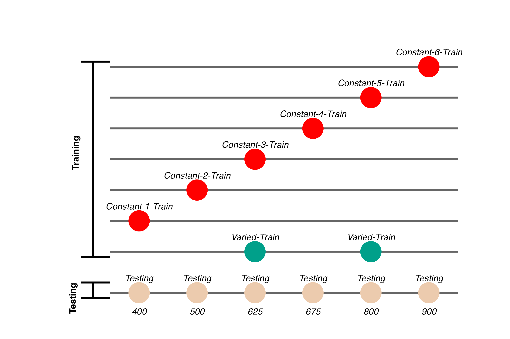
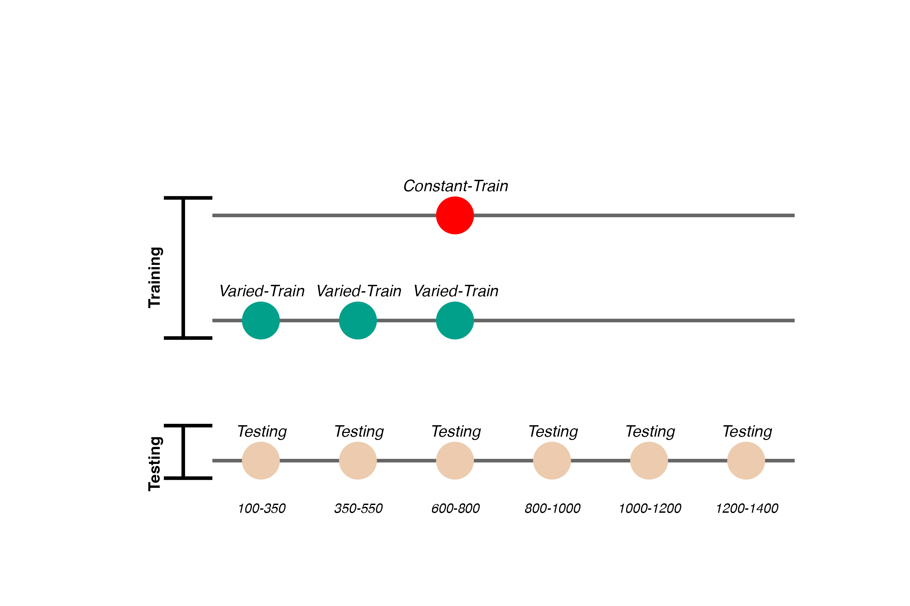

The Role of Variability in Learning Generalization: A Computational Modeling Approach
Dissertation Defense
![]()
Click here to open the dissertation manuscript.
Slides
Presentation slides are available below. You can navigate these sides using the ← and → keys. Press m to display all commands (e.g., press o to switch to slide overview)
Learning Generalization
- Learning is often specific
- Longstanding scientific interest in how to improve generalization or transfer
thank you all for joining in my defense
Learning is often more specific than we’d like. There has been longstanding scientific interest in trying to understand what factors we might be able to control that might have beneficial effects on generalization and transfer.
One such factor, and the topic of my dissertation - is the influence of variability on generalization
Over the next 45 minutes, I will walk through the specific empirical studies and computational modeling work
Variability
- Variation during training linked to improved transfer in numerous domains
- Category learning, perceptual learning, education, visuomotor learning
- sometimes alternatively termed diversity, heterogenity, numerosity etc.
- What does variability mean in the context of learning interventions?
- How spread out examples are in the task space
- The number of unique items/problems experienced
- exposure to wider array of contexts/background conditions
- The influence of variability has been studied across many different domains
- although sometimes referred
variability can refer to many different
Common Empirical Patterns
Training
- Both training conditions complete the same number of training trials.
- Varied group has worse training performance.
Testing
- Tested from novel conditions.
- Varied group has better test performance

higher or lower variability can of course vary greatly between domains
One common manipulation in visuomotor learning is to have a group train with the lowest possible variability - constant
This is a fairly common pattern, at least to my reading. But….,
But also plenty of contradictory results and complications
- Cases where varied training doesn’t benefit generalization
- Cases where more training variation results in worse outcomes
- Cases where the influence of variation interacts with some other factor
- difficulty
- prior knowledge
- Frequency effects, or amount of training/learning before testing
Plenty of discrepancy in results, sometimes even for very similar tasks. - and lots of work remains to unravel when exactly variability is or isn’t helpful
Overview
Project 1
- Visuomotor projectile launching task
- two experiments
- Beneficial effect of variability
- Instance-based similarity model
Project 2
- Visuomotor extrapolation task
- Three experiments
- Effect of variability is null or negative
- Connectionist model (ALM) and hybrid associative & rule model (EXAM)
- Dissertations consists of 2 primary projects.
- Each within their own subdomain of visuomotor learning
- and each employing a distinct type of computational modeling
Project 1
An instance-based model account of the benefits of varied practice in visuomotor skill1
Theoretical Frameworks
- Desirable Difficulties Framework (Bjork & Bjork, 2011)
- Challenge Point Framework (Guadagnoli & Lee, 2004)
- Schema Theory (Schmidt, 1975)
- Variety of theoretical explanations have been proposed for the commonly observed effects
- In visuomotor learning and most relevant for my work, Schema theory in paticular has been extremely influential, and seems to have inspired hundreds of studies
- Unlike the models I’ll be presenting today, at least to my knowledge none of these have ever been formally specified and actually fit to human data
Issues with previous research
- Assumptions about what is encoded
- Assumptions about the formation of abstractions
- Aggregation issues and similarity confounds
- Schema theory assumes that learners encode abstractions, or parameters, that enable generalization, and that variation is parituiclarly helpful
- failures to consider nonlinear effects of learning
- failure to consider that, through lieu of being exposed to broader coverage of the task space, varied training manipulations can often
Designs that avoid similarity issue
Kerr & Booth 1978
- Bean bag tossing task
- Constant and varied conditions train from distinct positions
- Both groups are tested from the position where the constant group trained
- Impressive demonstration of varied training outperforming constant training
Experiment 1
- Conceptual replication of Kerr & Booth design
- Also test positions novel to both groups
- Validate computerized visuomotor learning task
Experiment 1 Design

- Constant trains from one position (760)
- 200 trials
- Varied trains from two positions (610 and 910)
- 100 trials per position
- Both groups are tested from all three training positions, and a new position novel to both groups (835)
Hit The Target Task
- Training Stage - 200 training trials with feedback. Constant groups trains from single position. Varied group practices from two positions.
- Transfer Stage - All subjects tested from both positions they were trained, and the positions trained by other group
- Data recorded - For every throw, recorded the X velocity and Y velocity of ball at release
- Use mouse to flick the ball towards the target
- Must release from orange square
- Subjects have flexibility in terms of trajectory and release point inside the square
- Nicety of computerized task - we record the precise details easily
Project 1 - Experiment 1 Results
Training

Testing

Varied training significantly better at the position that was novel for all subjects. Also better even at the position that the constant group trained at.
4 different positions, the varied group trained from the easiest and the hardest position, they also interpolated the constant group.
Experiment 2 Design

task mostly the same - minor adjustments to barrier 6 different constant groups varied group doesn’t train on either the easiest or the hardest position
larger design to give us more data to work with for modelling
Project 1 - Experiment 2 Results
Training
Testing
- This time we can compare varied and constant training - by just comparing the varied group to the 2 constant groups that trained at the same locations
- Here we have all 6 of the constant groups collapsed together
- also did more fine grained grained comparisons
Project 1 Computational Model
Instance encoding, and similarity-based generalization assumptions
- Instances refers to individual throws (x and y velocity)
- Similarity refers to the distance between training throws and the solution space of each of the eventual testing positions.
Project 1 Computational Model
Computing Similarity
- Euclidean distance between each training throw, and each solution space
- Similarity computed as a Gaussian decay function of distance, i.e. larger distances result in lower similarity
- Each participant gets their own similarity score for each of the 6 testing positions
- similarity score for a given testing position is the sum of the similarities between each training throw and the entire empirical solution space
Model Definition
- \(d_{i,j} = \sqrt{(x_{Train_i}-x_{Solution_j})^2 + (y_{Train_i}-y_{Solution_j})^2 }\)
- \(Similarity_{I,J} = \sum_{i=I}\sum_{j=J} (e^{-c^\cdot d^{p}_{i,j}})\)
each participant has all of their training throws compared to each of the 6 testing positions
Non-linear similarity
Does this similarity metric work?
- Our similarity measure does is a significant predictor of testing performance.
- Remains significant when controlling for training accuracy, and training condition.
Accounting for group-level effect
- The base version of the model fit a single \(c\) parameter
- thus assuming that everyone generalizes to the same degree
- We next fit a 2-c version, separately optimizing for varied and constant groups, resulting in new 2-c similarity scores for each participant.
- The optimal c value for the varied group is smaller than that of the constant group, indicative of broader generalization.
- When 2-c similarity is added to the linear model predicting testing performance as a function of condition, the effect of training condition is no longer significant.
- not the case with the original 1-c similarities.
- Thus the influence of varied training can be explained by an instance-based similarity model, IF one assumes flexibility in the generalization gradient.
Conclusions
- New empirical support for a benefit of variability in visuomotor skill tasks
- Some support for the less common pattern observed by Kerr & Booth (1978)
- Demonstrated the utility of a similarity based approach in this domain
Project 2
Project 2
Impact of Training Variability on Visuomotor Function Learning and Extrapolation
- Influence of varied practice in a function learning task
- Experiments 1, 2, and 3:
- Training regimes and testing conditions
- Learning, discrimination, and extrapolation performance metrics
Project 2 - Questions and Goals
Empirical - Design a task-space large enough to assess multiple degrees of extrapolation - Compare varied and constant generalization from several distinct distances from their nearest training condition
Model-based - If variation does influence extrapolation, can an associative learning model with similarity-based activation provide a good account? - Can our modelling framework simultaneously account for both training and testing data? - Accounting for the full distribution of responses
Hit The Wall Task
- Target velocity presented at top of screen
- Participants attempt to “hit the wall” at the correct velocity
- Feedback during training - how many units above or below the target-band
- Only the “x velocity” component of the throw is relevant to the task
Project 2 - Experiment 1 Design


- 156 participants included in final analysis
- Varied group trains from 3 “velocity bands”, constant group from 1
- Both groups complete same total number of training trials
Project 2 - Experiment 1 Results


To compare accuracy between groups in the testing stage, we fit a Bayesian mixed effects model predicting deviation from the target band as a function of training condition (varied vs. constant) and band type (trained vs. extrapolation), with random intercepts for participants and bands. The model results are shown in Table 3. The main effect of training condition was not significant ( The extrapolation testing items had a significantly greater deviation than the training bands ( Most importantly, the interaction between training condition and band type was significant ( As shown in Figure 5, the varied group had disproportionately larger deviations compared to the constant group in the extrapolation bands.
Finally, to assess the ability of both conditions to discriminate between velocity bands, we fit a model predicting velocity as a function of training condition and velocity band, with random intercepts and random slopes for each participant.
on. Most relevant to the issue of discrimination is the coefficient on the Band predictor ( Although the median slope does fall underneath the ideal of value of 1, the fact that the 95% credible interval does not contain 0 provides strong evidence that participants exhibited some discrimination between bands. The significant negative estimate for the interaction between slope and condition ( suggests that the discrimination was modulated by training condition, with the varied participants showing less sensitivity between bands than the constant condition
Project 2 - Experiment 2 Design


- Training and Testing bands are in reversed order, relative to Experiment 1
- 110 participants included in final analysis
Project 2 - Experiment 2 Results


The analysis of testing accuracy examined deviations from the target band as influenced by training condition (Varied vs. Constant) and band type (training vs. extrapolation bands). The results, summarized in Table 6, reveal no significant main effect of training condition ( However, the interaction between training condition and band type was significant with the varied group showing disproportionately larger deviations compared to the constant group on the extrapolation bands
Project 2 - Experiment 3
- Ordinal Feedback
- directional feedback indicating too high, too low, or correct
- Both Original (Experiment 1), and reverse (Experiment 2) orders included
- 195 participants included in final analysis
Project 2 - Experiment 3 Results
Experiment 3 - Accuracy


Experiment 3 - Discrimination

Project 2 - Computational Modeling
The Associative Learning Model ALM
- Two layer network - adapted from ALCOVE (Kruschke (1992))
- Input layer node for each stimulus, output node for each response
- Input nodes activate as a function of their Gaussian similarity to the stimulus
- Weights udpated via delta rule - error driven learning
- Provides good account of human learning data, and interpolation performance, but struggles with extrapolation (DeLosh et al., 1997)
Extrapolation - Association Model (EXAM)
- Extension to ALM to account for human extrapolation behavior
- When a novel stimulus is presented, EXAM assumes the nearest 2-3 prior examples are retrieved, and used to compute a slope
- The slope is used to adjust the ALM response
| EXAM Response Generation | ||
|---|---|---|
| Slope Computation | \(S = \frac{m(X_{1})-m(X_{2})}{X_{1}-X_{2}}\) | Slope value, \(S\) computed from nearest training instances |
| Response | \(E[Y|X_i] = m(X_i) + S \cdot [X - X_i]\) | Final EXAM response is the ALM response for the nearest training stimulus, \(m(X_i)\), adjusted by local slope \(S\). |
Project 2 - Model Fitting Procedure
Approximate Bayesian Computation (ABC)
- simulation based parameter estimation (Kangasrääsiö et al., 2019; Turner & Van Zandt, 2012)
- Useful for models with unknown likelihood functions (e.g. many neural network and drift diffusion models)
- full distribution of plausible model predictions for each participant
Project 2 - Model Fitting Procedure
Model Fitting Approach
- Two parameters for both ALM and EXAM
- generalization parameter: \(c\)
- learning rate parameter: \(lr\)
- ALM and EXAM fit separately to each individual participant
- Rejection based ABC used to obtain 200 posterior samples, per participant, per model
- i.e. 200 plausible values of \(c\) and \(lr\)
- All models fit with three different approaches
- Fit to only the training data
- Fit to both training and testing data
- Fit to only testing data
Modelling Results
Posterior Predictive Distribution

Empirical data and Model predictions for mean velocity across target bands. Fitting methods (Test Only, Test & Train, Train Only) - are separated across rows, and Training Condition (Constant vs. Varied) are separated by columns. Each facet contains the predictions of ALM and EXAM, alongside the observed data.
Modelling Results
Best fitting models per participant

Difference in model errors for each participant, with models fit to both train and test data. Positive values favor EXAM, while negative values favor ALM
Model Comparison - Experiment 1

Figure 21: A-C) Conditional effects of Model (ALM vs EXAM) and Condition (Constant vs. Varied). Lower values on the y axis indicate better model fit. D) Specific contrasts of model performance comparing 1) EXAM fits between constant and varied training; 2) ALM vs. EXAM for the varied group; 3) ALM fits between constant and varied. Negative error differences indicate that the term on the left side (e.g., EXAM Constant) tended to have smaller model residuals.
Model Comparison - Experiment 2 and 3

Conditional effects of Model (ALM vs EXAM) and Condition (Constant vs. Varied) on Model Error for Experiment 2 and 3 data. Experiment 3 also includes a control for the order of training vs. testing bands (original order vs. reverse order).
General Discussion
Summary
- Project Comparison:
- HTT (Project 1): Varied training led to superior testing performance.
- HTW (Project 2): Varied training led to poorer performance.
- Key Findings:
- HTT: Varied group outperformed constant group in both training and testing.
- HTW: Varied group exhibited poorer performance across training and testing stages.
- Modeling Approaches:
- HTT: IGAS model quantifies similarity between training and testing conditions.
- HTW: ALM and EXAM models fit to individual participant data.
Project Comparison
- Task Differences:
- HTT:
- Complex parabolic trajectory.
- Both x and y velocities relevant.
- Perceptually salient varied conditions.
- HTW:
- Simple 1D force mapping.
- Only x velocity relevant.
- Less perceptually salient varied conditions.
- HTT:
- Task Complexity:
- HTT: More complex task space with irregularities.
- HTW: Smooth, linear mapping between velocity and feedback.
the task spaces were different. HTT had a more complex task space with irregularities introduced by the barrier, making the learning environment less predictable. HTW had a smoother, linear mapping between velocity and feedback, providing a more predictable learning environment.
Conclusion
- Task-specific characteristics are crucial in determining the benefits of varied training.
- Combining empirical research with computational modeling enhances understanding of learning and generalization.
- The contrasting results highlight the importance of considering task characteristics when designing experiments to assess the influence of training interventions.
- Combining empirical and computational modeling approaches can help uncover the cognitive mechanisms supporting learning and generalization.
- Future research should continue to investigate the interplay between task demands, training manipulations, and individual differences to optimize educational and training outcomes.
References
Extras
Manuscript
ALM
| ALM Response Generation | ||
|---|---|---|
| Input Activation | \(a_i(X) = \frac{e^{-c(X-X_i)^2}}{\sum_{k=1}^M e^{-c(X-X_k)^2}}\) | Input nodes activate as a function of Gaussian similarity to stimulus |
| Output Activation | \(O_j(X) = \sum_{k=1}^M w_{ji} \cdot a_i(X)\) | Output unit \(O_j\) activation is the weighted sum of input activations and association weights |
| Output Probability | \(P[Y_j|X] = \frac{O_j(X)}{\sum_{k=1}^M O_k(X)}\) | The response, \(Y_j\) probabilites computed via Luce’s choice rule |
| Mean Output | \(m(X) = \sum_{j=1}^L Y_j \cdot \frac{O_j(x)}{\sum_{k=1}^M O_k(X)}\) | Weighted average of probabilities determines response to X |
| ALM Learning | ||
| Feedback | \(f_j(Z) = e^{-c(Z-Y_j)^2}\) | feedback signal Z computed as similarity between ideal response and observed response |
| magnitude of error | \(\Delta_{ji}=(f_{j}(Z)-o_{j}(X))a_{i}(X)\) | Delta rule to update weights. |
| Update Weights | \(w_{ji}^{new}=w_{ji}+\eta\Delta_{ji}\) | Updates scaled by learning rate parameter \(\eta\). |
EXAM
| EXAM Response Generation | ||
|---|---|---|
| Instance Retrieval | \(P[X_i|X] = \frac{a_i(X)}{\sum_{k=1}^M a_k(X)}\) | Novel test stimulus \(X\) activates input nodes \(X_i\) |
| Slope Computation | \(S = \frac{m(X_{1})-m(X_{2})}{X_{1}-X_{2}}\) | Slope value, \(S\) computed from nearest training instances |
| Response | \(E[Y|X_i] = m(X_i) + S \cdot [X - X_i]\) | Final EXAM response is the ALM response for the nearest training stimulus, \(m(X_i)\), adjusted by local slope \(S\). |
Comparison {.scrollable .unnumbered .unlisted, .smaller}
| Dimension | HTT (Project 1) | HTW (Project 2) |
|---|---|---|
| Task Description | Projectile launching to hit a target | Projectile launching to hit wall at a specific velocity |
| Task Complexity | More complex parabolic trajectory, both x and y velocities relevant to outcome | Simpler 1D mapping of force to outcome. Only x velocity is relevant. |
| Task Space | More complex: xy velocity combinations closer to the solution space may still result in worse feedback due to striking the barrier. | Simpler: smooth, linear mapping between velocity and feedback. |
| Perceptual salience of Varied Conditions | Varied conditions (# of throwing distances) are perceptually distinct, i.e. salient differences in distance between launching box and target. | Varied conditions (# of velocity bands) are less salient - only difference is the numeral displayed on screen. |
| Testing Feedback | Testing always included feedback | Primary testing stage had no feedback. |
| Potential for Learning during Testing | Limited potential for learning during testing due to feedback. | Some potential for learning during no-feedback testing by observing ball trajectory. |
| Training Experience | Varied group gets half as much experience on any one position as the constant group. | Varied group gets 1/3 as much experience on any one velocity band as the constant group. |
| Testing Structure | Random interleaving of trained/transfer testing distances. | Blocked structure, separately testing trained vs extrapolation testing bands. |
Footnotes
Now published in Cognitive Psychology - (Gorman & Goldstone, 2022)↩︎